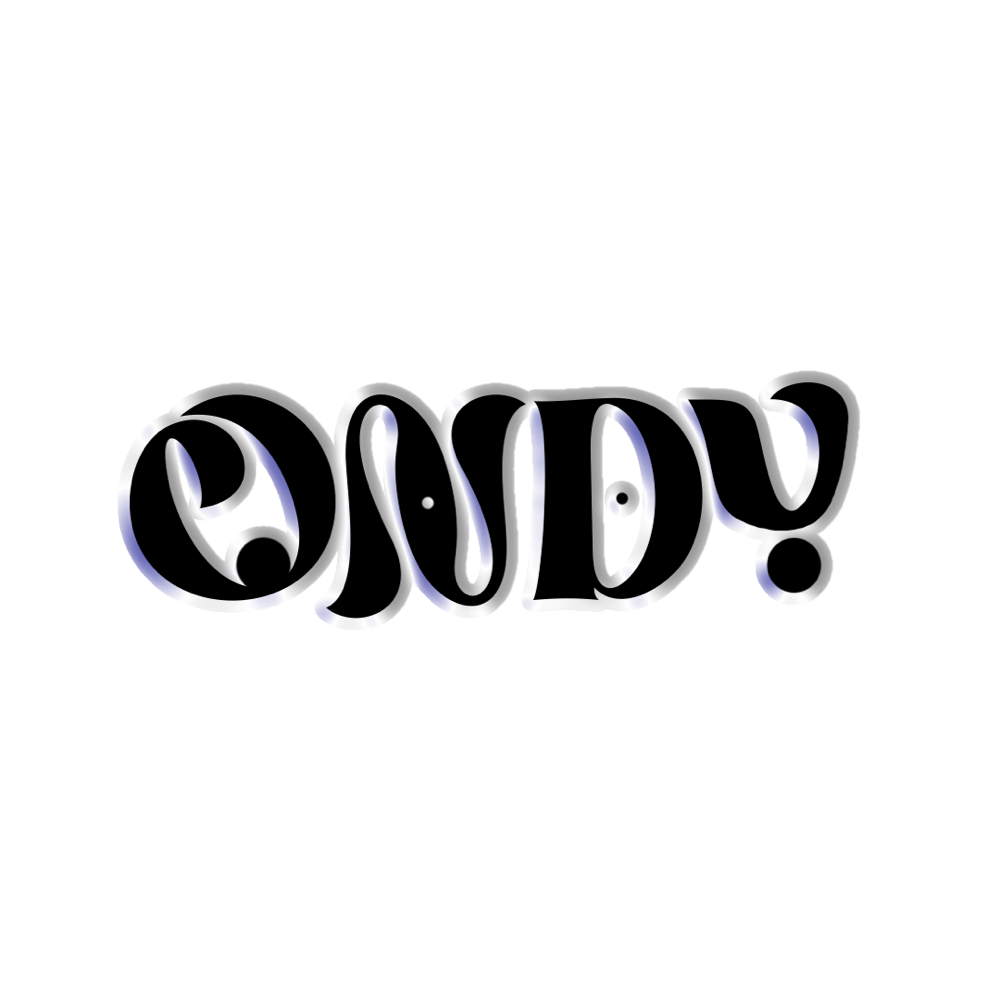

I'm interested in the space between people and technology.
I work across product design, code, image, sound and emerging technology to make experiences people actually want to interact with. I combine product and interaction design, AI-assisted prototyping, front-end implementation, visual media and sound to make human-centered digital and live experiences.
Now Designing and building Pathwise IQ, an apprenticeship platform at CareerWise USA. Running the visual identity of Asian Unity at CU Boulder. Looking for Summer 2027 creative technologist, design engineer and product design internships.
CU Boulder · B.S. Creative Technology & Design + Music Technology · expected May 2028 · Boulder, CO
Work Pathwise IQ, CareerWise USA, 2025 to now
Pathwise IQ is a new apprenticeship-management product, planned as a white-label platform. Supervisors, apprentices, schools and employers all use it. These are the pieces I owned end to end, from requirements to a clickable prototype to front-end code. Every screenshot is a prototype with fictional demo data.
What an applicant sees for one job posting, from landing on it to pressing Apply. Often a high school junior reading in a short window, sometimes an English-language learner, almost always on a phone.
Role: I owned the design plan, the research and the prototype. The product lead set requirements and reviewed each iteration; the seven review passes were AI reviewers I briefed; engineering ports the result into the product.
Problem
The existing posting page buried the two-step application note inside the job description, put every fact in a long sidebar, and had no answer for what happens after you apply, or when a job closes, pauses, or changes while your application is pending. The kickoff added new states and loosened "required" fields, so engineering and design were working from different lists.
What I did
Wrote the design plan: six principles (readable in 30 seconds, no surprises at Apply, plain words, show what's there, one clear next step, built for phones, screen readers and printers), a field-by-field display rule table, and a state table where the first true row wins.
Ran a half-day of competitive research against Handshake, LinkedIn, Indeed, USAJobs, Airbnb and the apprenticeship.gov finder, one column per layout question.
Built the page as a self-contained HTML prototype on the Pathwise stylebook tokens, with five test postings and every page state switchable from a control bar.
Put iteration one through seven independent review lenses (the 16-year-old reader, UX and IA, visual design, accessibility, product purpose, copy, implementation fit) and synthesized them into one set of changes.
Kept the copy free of system nouns: "in person" not "on-site", "vaccines" not "immunizations", "Lasts 3 years" not "commitment". Empty sections disappear, but pay says "Pay not listed", because its absence matters.
Made print a real deliverable: counselors print postings, so every list is open and links print their URLs.
Result
Iteration two: pay is the largest thing on the page, every fact is stated once, sections render only when they add something, and "How to apply" collapsed to one line that expands. The state model grew from 13 to 16, with the student's own news (interview, offer, hired) outranking a closed job, and when there is nothing to do the sticky bar, checklist and spots count all go away. The longest test posting went from about seven phone screens to about four. Iteration two went to the product lead for review in mid-October 2026. Andy: where it stands now (in engineering, shipped?)
Tools
Figma · React + TypeScript prototype · Pathwise design tokens · Claude Code for scaffolding the prototype and running the seven review passes · headless Chrome for state galleries
Iteration two on a phone, inside the prototype's control frame. Pay leads the Quick facts, and the bottom bar holds only Apply and Favorite.
More screens: desktop layout and the 16-state gallery
Desktop keeps the same order and moves the action into a sticky card on the right.All 16 states rendered from one posting, numbered in priority order. Each is one banner plus one main button.
A supervisor with a dozen apprentices needs to know what is overdue, what is due this week, and why the system is asking. I owned how tasks look and behave across the product: the dashboard rail, the cards, the tags, the detail panel, the full My Tasks page, and the filtering and sort logic behind them.
Role: Mine from requirements to the prototype aligned with the product repo. Engineering owns the production build. Andy: adjust if the split was different
Problem
Supervisors get tasks from several places: check-ins, evaluations due, Related Training Instruction to approve, training plans to update, apprentices flagged at risk. The same task has to read the same way on the dashboard, in the detail panel and on the full page. Andy: one sentence on what was wrong with tasks before this work
What I did
Defined one task anatomy used everywhere: status pill, due date with lateness, title, the apprentice it is about, a "why this task" line, and one primary action that matches the task type.
Designed the dashboard rail as a slim summary (overdue first, then coming up, four tasks and a count) and the full page as a queue with search, "due soonest" sort, filters, and grouping into Overdue, Coming up, Snoozed and Done.
Worked through the interaction states: snooze with a return date, mark complete and undo, overdue styling that stays readable, and an empty state that says what happens next.
Kept status out of color alone: every pill has a word, overdue adds a date, and "why this task" is a sentence rather than an icon.
Iterated from a card-heavy first pass to the quieter rows the team approved, then rebuilt the prototype on the repo's real CSS and markup so engineering could lift it directly.
Result
The team approved the tasks prototype, and it became the reference for the app chrome and card style on later pages, including the job posting page. The aligned version runs on the repo's own tokens, component CSS and markup; a server-side render of the real React components matched the prototype's class lists for every Tasks page state. Andy: where it stands in the product now
Tools
Figma and Figma MCP · Cursor and Claude for structured prompt-to-wireframe passes · HTML prototypes · React component CSS from the product repo
Every apprenticeship carries required classroom hours, called Related Training Instruction. When a course is cancelled, full, or wrong for the apprentice, a supervisor has to swap it without breaking the hour requirements. I designed that flow end to end, inside the training map.
Role: I designed the course cards, their organization and filtering, and the swap flow from start to finish, as part of the training map's edit mode. Andy: who else worked on the training map, and what was theirs
Problem
A replacement has to keep the level's required hours, respect courses the program has locked, and stay invisible to the apprentice until the map is published. The supervisor also needs to see what else satisfies the same competency without searching a catalog. Andy: one sentence on how course edits worked before, and what went wrong
What I did
Put course editing inside the training map's edit mode, as a side panel scoped to one level ("For Calibration and inspection · Guided Practice"), so the swap always has context.
Designed the course card: provider, hours, format, whether it is included or free, the competencies it covers, and a lock state with its reason ("Can't be removed or swapped") for courses the program requires. Locked courses stay visible rather than disappearing.
Designed the swap as a replace, not a delete-and-add: pick the course to replace, then choose from "Courses you can use instead", already filtered to the same competency and level, with a recommended option first.
Kept the hours math on screen the whole time, so a swap cannot leave the level short. Nothing changes until "Confirm changes", and nothing reaches the apprentice until the map is published. Cancel swap returns to the list with no side effects.
Result
The flow is built into the interactive training-map wireframe (version 5) alongside the rest of the edit mode, on the Pathwise design tokens, and is the version shown below. Andy: where it stands now (reviewed, in engineering, shipped?)
Tools
Figma · interactive HTML wireframe on Pathwise design tokens · Claude for turning requirement docs into wireframe states
Swapping a course. The side panel lists only courses that fit the same competency and level, with the hours footer pinned underneath.
More screens: editing a level's courses, and the roster the flow starts from
Editing a level's courses before a swap. The locked course stays visible with its reason; the other offers Swap and Remove.
Pathwise IQ ships to partners under their own brands, so the design system has to be a token system first. I work on both sides of it: the tokens and guidelines designers use in Figma, and the CSS and components engineers build from.
Role: I maintain the stylebook (tokens, guideline docs, alignment tooling) and implement the Figma design system as front-end components. Andy: confirm how much of the token architecture you authored versus inherited
Problem
Prototypes drift. A mockup built with a hand-picked blue looks right in review and then has to be rebuilt on the real components, where it looks different. Designers and engineers end up arguing about which version is the design.
What I did
Two-layer tokens (primitives to semantics) exported for Tokens Studio in Figma and as CSS custom properties, with a separate brand file so a white-label partner overrides one file and nothing else. Components reference semantic tokens only; primitives are private.
Guideline docs that engineers actually read: color pairings with measured contrast, a 14px floor for functional text, a 16px floor for inputs so iOS doesn't zoom, focus rings as outlines so they survive high-contrast mode.
A rule for growth: a token is added only when reusing an existing one would change a decided design, and every addition records its contrast check.
A small alignment toolchain that takes a prototype and rewrites it onto the repo's tokens, component CSS and markup, then audits the result: any raw hex, undefined variable or off-catalog icon fails the build. A server-side render of the real React components diffs class lists against the prototype, so "matches the repo" is checked, not claimed.
Brand exploration for the product mark, including the leaf-in-the-counter "P" directions below.
Result
The first token version (0.1.0-alpha.3) is implemented in the dev environment and Storybook, and alpha.4 added the tokens real components had been hard-coding, each with a recorded contrast check. The alignment audit passed clean on the tasks prototype, which is the version engineering works from. Andy: is the token set live in Figma via Tokens Studio, and are partners using the brand override yet?
Tools
Figma + Tokens Studio · JSON tokens to CSS custom properties · React + Storybook · Python and Node scripts for alignment and audit · Tabler icons
The supervisor dashboard after alignment: the same design, now running on the repo's tokens and component CSS.
Three directions for the mark. The leaf lives in the counter of the P so it works at favicon size in one color. Andy: confirm this board is your exploration
I run the visual side of Asian Unity: logo, graphics, social, photo, video and motion. This year's theme is a channel. The yearly teaser flips through CRT static like someone changing channels, lands on an "incoming transmission from University of Colorado Asian Unity" message, then a music drop and the logo reveal. The same system carries the merch: "CH 48 · AUB-TV · 48 nations, one signal."
In the 30 days before mid-October 2026 the account reached 140K Instagram views, 2.5K interactions and 200 new followers.
A short 3D animated piece I took from thumbnails to a finished cut: multi-camera setups, keyframed performance, cinematic framing, pixel-art textures and UV mapping, compositing, editing and sound design.
Andy: link to the finished video, and confirm the character model is your own or credit its source
I DJ as ONDY: 30+ sets across clubs, bars, house parties and campus events, including opening slots for Slickportal and Space Wizard. I also work as an independent DJ and event-audio contractor for weddings (15+ so far): the couple consultation, ceremony and reception sound, mics, lighting, MCing, and the coordination with planners, venues and vendors on the day.
It is the most direct UX work I do. You watch behavior, read the feedback, and change the experience while it is happening. I also run the brand: the wordmark, the press kit and cover art for the shows. As president of CU Rave Club I lead a 300-member music community and have run six or more pop-ups and collaborations with venues and local artists.
Andy: link to a mix or the ONDY account

The ONDY wordmark.Cover art for DUBWUB 6.
AI assessment chatbot · CareerWise external AI tool
A conversational system that evaluates apprentice progress against a scoring rubric through structured questions, with voice input and output so people can talk to it instead of typing. I designed the chat experience and the structure of the interaction: how it opens with what needs attention, how it asks, and how it hands back a plan a supervisor can act on.
Andy: confirm the apprentice names in the demo are fictional
The supervisor persona in the demo, mid-conversation.
A private app for running this internship search from my phone. React and TypeScript on Vite, Postgres with row-level security, one serverless function, and a scheduled Claude Code routine that discovers postings, scores them on skill, interest and trajectory fit, writes a brief, and tailors a resume from a JSON base. No router, no drag library, no CSS framework: the design system is one tokens file, and this page uses the same one.
The part I care about is the card. Four rounds of review (a simulated user, a design critique, a recruiter and data pass, an accessibility pass) produced a spec with rules like: one question per screen, text before numbers, never show a judgment without its evidence, never dress a guess as a measurement, and honest empty states. Scores derived from a title alone get no sub-score bars. A posting nobody has read says so instead of rendering blanks.
It is private because it holds my applications. The decisions in it are the point.
No screenshot: the app holds personal application data.